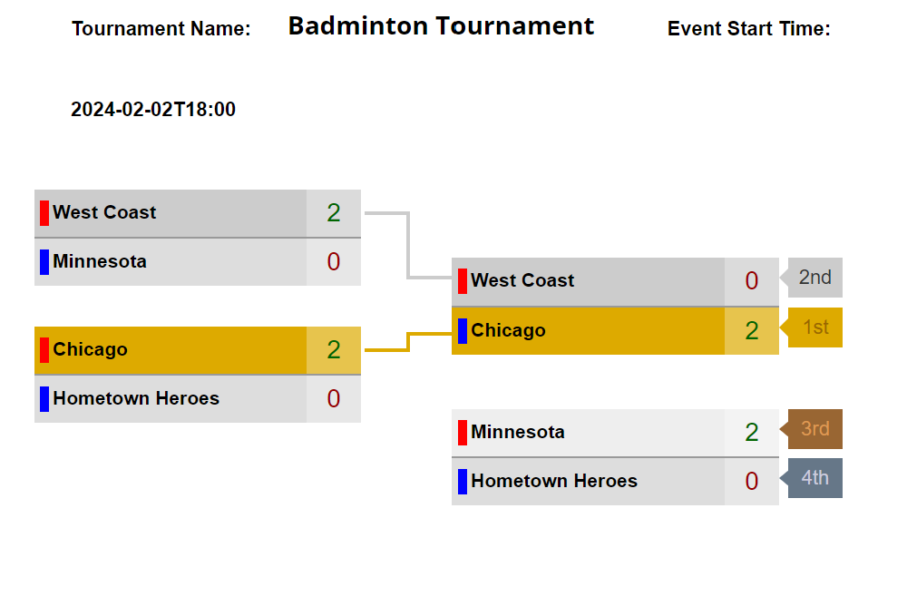

Badminton
Badminton will take place on Friday, February 2nd in the Auxillary Gym located in the basement of the Bear Athletic Center. To get there, walk in the Bear from the main doors on the south of the building. Then walk straight and take a right. Take the stairs down that are right next to the weight and cardio gym. From there, follow the signs to the Auxillary Gym. This event will be the first event of the Olympics. The bracket is located below. With this being the first event, it was decided that each group of partners should be based on their teams. Seeding was done randomly. It will be a single elimination tournament, so every team will play twice, with a third place game also being played prior to the championship game if time allows.
